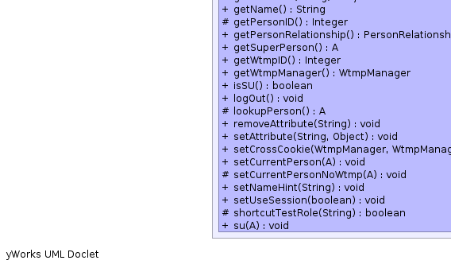
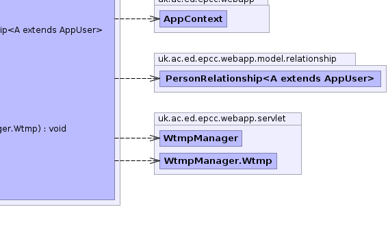

- java.lang.Object
-
- uk.ac.ed.epcc.webapp.AbstractContexed
-
- uk.ac.ed.epcc.webapp.session.AbstractSessionService<A>
-
- uk.ac.ed.epcc.webapp.servlet.session.ServletSessionService<A>
-
- Type Parameters:
A- type ofAppUser
- All Implemented Interfaces:
- AppContextCleanup, AppContextService<SessionService<A>>, Contexed, SessionService<A>
public class ServletSessionService<A extends AppUser> extends AbstractSessionService<A>
A SessionService for servlet context. This is normally created and added to the AppContext in a Filter. Some functionality will work without a table of users configured as these can be mapped onto the underlying servlet mechanisms. TheServletServiceis given an opportunity to extract the current user from the HTTP request allowing alternate authentication mechanisms.- See Also:
ServletService-


 
-
-
Field Summary
Fields Modifier and Type Field and Description static java.lang.StringBECOME_USER_ROLEstatic java.lang.StringPERSON_RELATIONSHIP_TABLEprotected static java.lang.StringSUPER_PERSON_ID_ATTRstatic java.lang.StringWTMP_IDstatic java.lang.StringWTMP_TABLE_PROP-
Fields inherited from class uk.ac.ed.epcc.webapp.session.AbstractSessionService
ALLOW_UNKNOWN_RELATIONSHIP_IN_OR_FEATURE, APPLY_DEFAULT_PERSON_RELATIONSHIP_FILTER, APPLY_DEFAULT_TARGET_RELATIONSHIP_FILTER, auth_time_tag, auth_type_tag, CACHE_RELATIONSHIP_FEATURE, person_tag, ROLE_FIELD, ROLE_LIST_CONFIG, ROLE_PERSON_ID, ROLE_TABLE, TOGGLE_ROLES_FEATURE, USE_ROLE_PREFIX
-
Fields inherited from class uk.ac.ed.epcc.webapp.AbstractContexed
conn
-
Fields inherited from interface uk.ac.ed.epcc.webapp.session.SessionService
ADMIN_ROLE
-
-
Constructor Summary
Constructors Constructor and Description ServletSessionService(AppContext c)
-
Method Summary
All Methods Instance Methods Concrete Methods Modifier and Type Method and Description voidaddSecurityContext(java.util.Map att)Add context parameters for security logging.protected booleancanLogin(A person)extension point for canLogin check.booleancanSU(A new_person)voidclearCurrentPerson()clears all record of the current person.java.lang.ObjectgetAttribute(java.lang.String key)retrieve an object stored in the session.java.lang.StringgetName()Get the Name for the current user.protected java.lang.IntegergetPersonID()Get the ID of the ccurrent person.PersonRelationship<A>getPersonRelationship()AgetSuperPerson()java.lang.IntegergetWtmpID()WtmpManagergetWtmpManager()booleanisSU()voidlogOut()Clear current person and any saved stateprotected AlookupPerson()extracted method to look up person from the cached id.voidremoveAttribute(java.lang.String key)remove object from sessionvoidsetAttribute(java.lang.String key, java.lang.Object value)Store an object in the session.voidsetCrossCookie(WtmpManager man, WtmpManager.Wtmp w)voidsetCurrentPerson(A person)Set the current personprotected voidsetCurrentPersonNoWtmp(A person)voidsetNameHint(java.lang.String name)Set a name hint in the session.voidsetUseSession(boolean use)protected booleanshortcutTestRole(java.lang.String role)perform a non-cached role-check.voidsu(A new_person)-
Methods inherited from class uk.ac.ed.epcc.webapp.session.AbstractSessionService
addRoleByID, cacheRole, canHaveRole, canHaveRole, cleanup, flushRelationships, getApplyToggle, getAuthenticationTime, getAuthenticationType, getCurrentPerson, getDefaultFactoryClass, getExplicitRoles, getGlobalRoleFilter, getGlobalRoleFilter, getLocale, getLoginFactory, getLoginTable, getPersonInRelationshipRoleFilter, getPersonInRoleFilter, getRelationshipRoleFilter, getRelationshipRoleFilter, getStandardRoles, getTargetInRelationshipRoleFilter, getTimeZone, getToggle, getToggleMap, getToggleRoles, getType, hasRelationship, hasRelationship, hasRole, haveCurrentUser, isAuthenticated, isCurrentPerson, makeDirectPersonInRelationshipRoleFilter, makeDirectRelationshipRoleFilter, makeNamedFilter, makePersonInRelationshipRoleFilter, makeRelationshipRoleFilter, makeToggleMap, mapRoleName, rawRoleQuery, removeRoleByID, setApplyToggle, setAuthenticationTime, setAuthenticationType, setCurrentPerson, setCurrentRoleToggle, setRole, setTempRole, setToggle, setupRoleTable, testRole, toggleRole, toString
-
Methods inherited from class uk.ac.ed.epcc.webapp.AbstractContexed
getContext, getLogger, resetLogger
-
Methods inherited from class java.lang.Object
clone, equals, finalize, getClass, hashCode, notify, notifyAll, wait, wait, wait
-
Methods inherited from interface uk.ac.ed.epcc.webapp.session.SessionService
canHaveRoleFromList, hasRelationship, hasRoleFromList, personHasRelationship
-
Methods inherited from interface uk.ac.ed.epcc.webapp.Contexed
getContext
-
-
-
-
Field Detail
-
WTMP_TABLE_PROP
public static final java.lang.String WTMP_TABLE_PROP
- See Also:
- Constant Field Values
-
PERSON_RELATIONSHIP_TABLE
public static final java.lang.String PERSON_RELATIONSHIP_TABLE
- See Also:
- Constant Field Values
-
BECOME_USER_ROLE
public static final java.lang.String BECOME_USER_ROLE
- See Also:
- Constant Field Values
-
SUPER_PERSON_ID_ATTR
protected static final java.lang.String SUPER_PERSON_ID_ATTR
- See Also:
- Constant Field Values
-
WTMP_ID
public static final java.lang.String WTMP_ID
- See Also:
- Constant Field Values
-
-
Constructor Detail
-
ServletSessionService
public ServletSessionService(AppContext c)
-
-
Method Detail
-
getName
public java.lang.String getName()
Description copied from interface:SessionServiceGet the Name for the current user. This method can still be used when no login factory is configured.- Specified by:
getNamein interfaceSessionService<A extends AppUser>- Overrides:
getNamein classAbstractSessionService<A extends AppUser>- Returns:
- String
-
shortcutTestRole
protected boolean shortcutTestRole(java.lang.String role)
Description copied from class:AbstractSessionServiceperform a non-cached role-check. This is called every time a role is checked. If it returns true the role is allowed for that call only. If it returns false the cache and the testRole function are queried. This is to allow per request roles e.g. ones tied to a particular url.- Overrides:
shortcutTestRolein classAbstractSessionService<A extends AppUser>- Returns:
-
setAttribute
public void setAttribute(java.lang.String key, java.lang.Object value)Description copied from interface:SessionServiceStore an object in the session. Objects stored in the session should not contain references to the AppContext as theAppContextmight have a shorter lifetime. t
-
removeAttribute
public void removeAttribute(java.lang.String key)
Description copied from interface:SessionServiceremove object from session
-
getAttribute
public java.lang.Object getAttribute(java.lang.String key)
Description copied from interface:SessionServiceretrieve an object stored in the session.- Returns:
- Object or null
-
getWtmpManager
public WtmpManager getWtmpManager()
-
lookupPerson
protected A lookupPerson()
Description copied from class:AbstractSessionServiceextracted method to look up person from the cached id. This can be extended by sub-classes e.g. to add login tracking.- Overrides:
lookupPersonin classAbstractSessionService<A extends AppUser>- Returns:
-
getWtmpID
public java.lang.Integer getWtmpID()
-
clearCurrentPerson
public void clearCurrentPerson()
Description copied from class:AbstractSessionServiceclears all record of the current person. The toggle-map is not cleared. It will have no effect if a new person does not have the role but it allows toggle state to be retained acSross a SU.- Specified by:
clearCurrentPersonin interfaceSessionService<A extends AppUser>- Overrides:
clearCurrentPersonin classAbstractSessionService<A extends AppUser>
-
logOut
public void logOut()
Description copied from interface:SessionServiceClear current person and any saved state- Specified by:
logOutin interfaceSessionService<A extends AppUser>- Overrides:
logOutin classAbstractSessionService<A extends AppUser>
-
getSuperPerson
public A getSuperPerson()
-
setCurrentPerson
public void setCurrentPerson(A person)
Description copied from interface:SessionServiceSet the current person- Specified by:
setCurrentPersonin interfaceSessionService<A extends AppUser>- Overrides:
setCurrentPersonin classAbstractSessionService<A extends AppUser>
-
setNameHint
public void setNameHint(java.lang.String name)
Set a name hint in the session. This helps to identify users in the container admin/logging.- Parameters:
name-
-
setCurrentPersonNoWtmp
protected void setCurrentPersonNoWtmp(A person)
- Parameters:
person-
-
setCrossCookie
public void setCrossCookie(WtmpManager man, WtmpManager.Wtmp w)
- Parameters:
man-w-
-
getPersonID
protected java.lang.Integer getPersonID()
Description copied from class:AbstractSessionServiceGet the ID of the ccurrent person. This method can be extended to add additional mechanisms to determine that person as it is called by bothAbstractSessionService.haveCurrentUser()andAbstractSessionService.getCurrentPerson()- Overrides:
getPersonIDin classAbstractSessionService<A extends AppUser>- Returns:
-
su
public void su(A new_person)
-
canSU
public boolean canSU(A new_person)
-
getPersonRelationship
public PersonRelationship<A> getPersonRelationship()
-
isSU
public boolean isSU()
-
setUseSession
public void setUseSession(boolean use)
-
canLogin
protected boolean canLogin(A person)
Description copied from class:AbstractSessionServiceextension point for canLogin check. superclasses may want to supress this check in SU mode to allow su to non valid account.- Overrides:
canLoginin classAbstractSessionService<A extends AppUser>- Returns:
-
addSecurityContext
public void addSecurityContext(java.util.Map att)
Description copied from interface:SessionServiceAdd context parameters for security logging.- Specified by:
addSecurityContextin interfaceSessionService<A extends AppUser>- Overrides:
addSecurityContextin classAbstractSessionService<A extends AppUser>
-
-